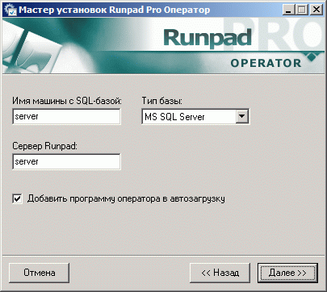
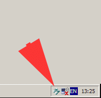
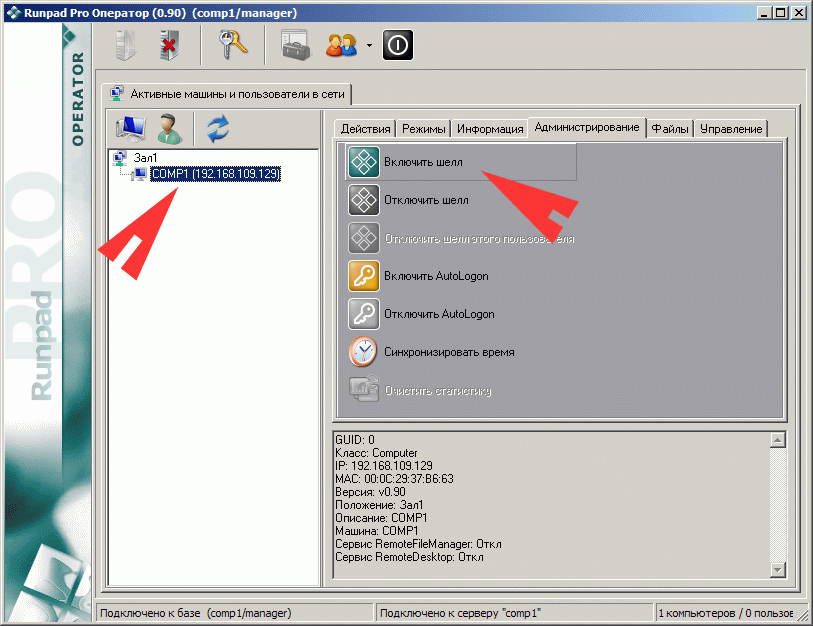
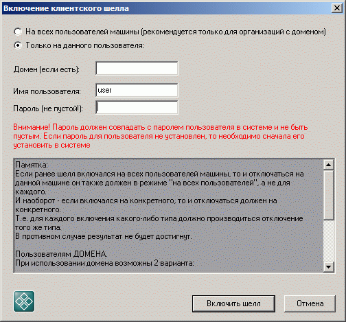
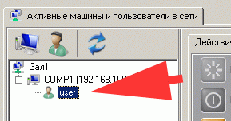

| Шаг 5. Установка программы оператора |
Программа оператора предназначена для обеспечения повседневной работы оператора в ряде функций по управлению клиентскими машинами.
Может быть как один, так и несколько операторов с различными установленными ранее администратором правами.
Установка производится на отдельную машину оператора, однако, если таковой нет, то можно установить и на машину с сервером Runpad Pro и/или SQL-сервером.
Также на машину оператора можно установить и клиентский шелл если вы желаете ограничить действия оператора или дать возможность использования ряда безопасных утилит шелла (запись дисков, работа с Bluetooth и пр.)
Установка запустится только из-под учетной записи администратора компьютера!
А саму программу оператора можно будет запускать и из-под ограниченного пользователя Windows, но уже без возможности менять какие-либо настройки, сделанные администратором.
Если на компьютере оператора несколько пользователей Windows, то все равно установку программы необходимо выполнить только один раз из-под учетной записи администратора.
После установки запустится программа настроек оператора, которую в дальнейшем можно будет запускать администратору в любой момент для изменения настроек оператора.
Важное замечание: если установлен клиентский шелл на машину оператора, то добавить программу в автозагрузку нужно обязательно, чтобы можно было отключить шелл (при наличии у оператора соотв. прав)

После настроек можно запускать программу оператора (необязательно из-под этой же учетной записи Windows).
Если программа была добавлена в автозагрузку, то появится только иконка в системном трее:

Сразу после запуска программы оператора будет предложено сделать вход в базу данных для идентификации оператора и его прав (которые ранее ему задал администратор в программе администратора).
Если вход не выполнить, то все основные действия с машинами будут недоступны.
По истечении 5-10 секунд (возможно не сразу) произойдет получение списка активных машин с сервера (в случае успешного соединения с сервером и наличия активных машин в сети).
Под активной машиной подразумевается машина с установленной на ней клиентской частью.
При этом следует разделять понятия "пользователь" и "машина":
Машины в списке - компьютеры с установленными клиентскими частями
Пользователи в списке - загруженные пользователи Windows, на которых в данный момент запущен клиентский шелл
Таким образом, на одной машине может быть сразу несколько пользователей (например, в случае терминального сервера или режима FastUserSwitch)
Естественно и действия для пользователей и машин отличаются. Так, например, можно перезагрузить машину, но не пользователя, а завершить сеанс можно пользователю, но не машине!
Если на клиентской машине установлен модуль Rollback без шелла, то ряд функций с этой машиной будет сделать нельзя (например, "включить шелл" и пр.).
Смотреть текущий статус отката Rollback в данном случае нужно на вкладке "Rollback (откат)". Также предварительно необходимо настроить опции отката в программе глобальных настроек администратора.
Все описание ниже имеет смысл только для клиентской части с шеллом, потому если вы не используете шелл, то можете данный раздел пропустить.
Все описание ниже только для шелла!
После успешного входа можно включить клиентский шелл на выбранной машине (машинах):

Причем имеется возможность включения шелла как на всех пользователей машины, так и на индивидуальных:
(Внимание! Прочтите в окне полное описание данной функции более подробно)

После включения шелла и входа удаленного пользователя в систему, в программе оператора уже появится пользователь в списке для данной машины:

Также для удобства можно включить автоматический логон пользователей на машине (AutoLogon), чтобы каждый раз не приходилось вводить один и тот же пароль пользователя.
Отключается шелл также через программу оператора.